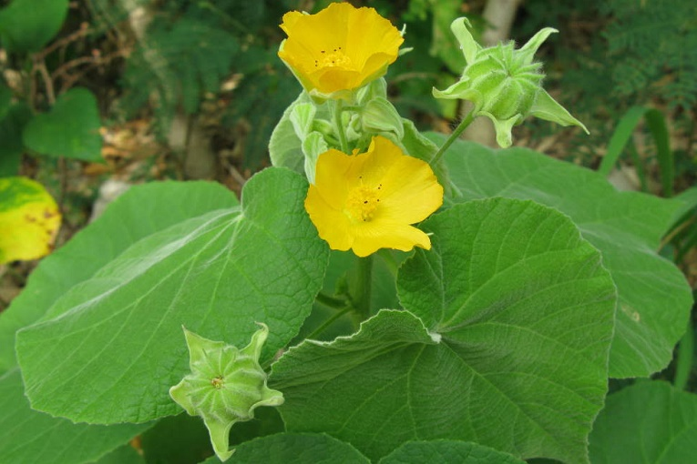

Basonym of Drug
Atibala
Main Synonym
Regional Name
- Bengali: Petari
- Gujarati: Khapat, Kanski
- Hindi: Kanghi, Kakahiya, Kangahi
- Kannada: Shrimudrigida
- Tamil: Tutti
- Telugu: Tutturubenda
- Punjabi: Pili Buti, Atikhirate
- English: Indian Mallow
Botanical Name
Abutilon indicum
Family
Malvaceae
Classification (Gana)
- Acharya Charaka: Balya Mahakshaya, Madhur Skandha
- Bhavprakash Nighantu: Guduchyadi Varga
External Morphology
2 to 3-meter high perennial herb
Useful Parts
Important Phytoconstituents
- Alkenols
- Beta-sitosterol
- Coumaric acid
- Caffeic acid
- Fumeric acid
Rasa Panchak
- Rasa: Madhura
- Guna: Laghu, Snigdha
- Virya: Shita
- Vipaka: Madhura
Action
Vata-pittahara
Therapeutic Indications
- Balya (for strength)
- Bhrumhana (increases weight)
- Vrushya (aphrodisiac)
Therapeutic Uses
- Sandhivata (osteoarthritis): Bala root powder with milk twice a day is beneficial.
- Mutrakruccha: Atibala decoction is useful in burning micturition.
- Rakta pradara: Root powder with honey and sugar is useful in metrorrhagia.
- Shlipada: Bala and Atibala with milk early in the morning is beneficial in filariasis.
Dose
- Decoction: 50-100 ml
- Powder: 3-6 gm
Formulations
Atibala Rasayana
Adverse Effect
Not Known
Remedial Measure
Not Required